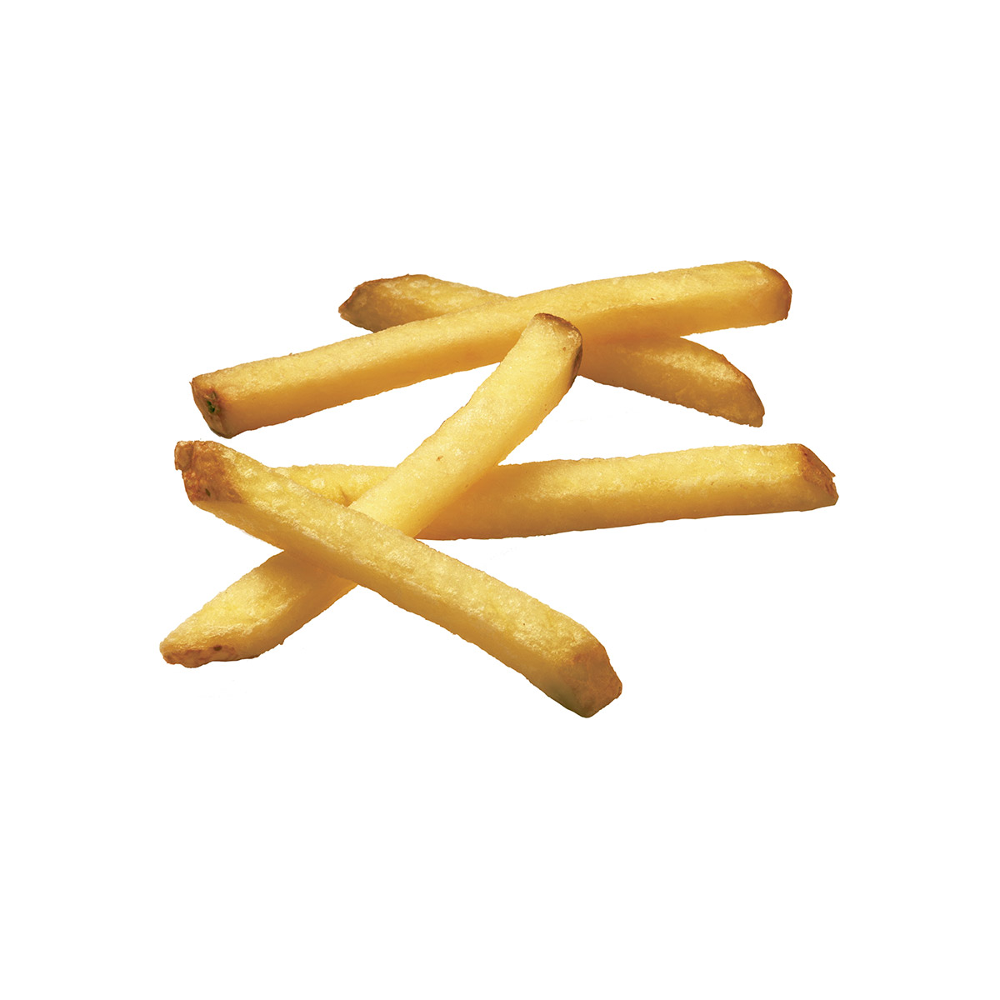
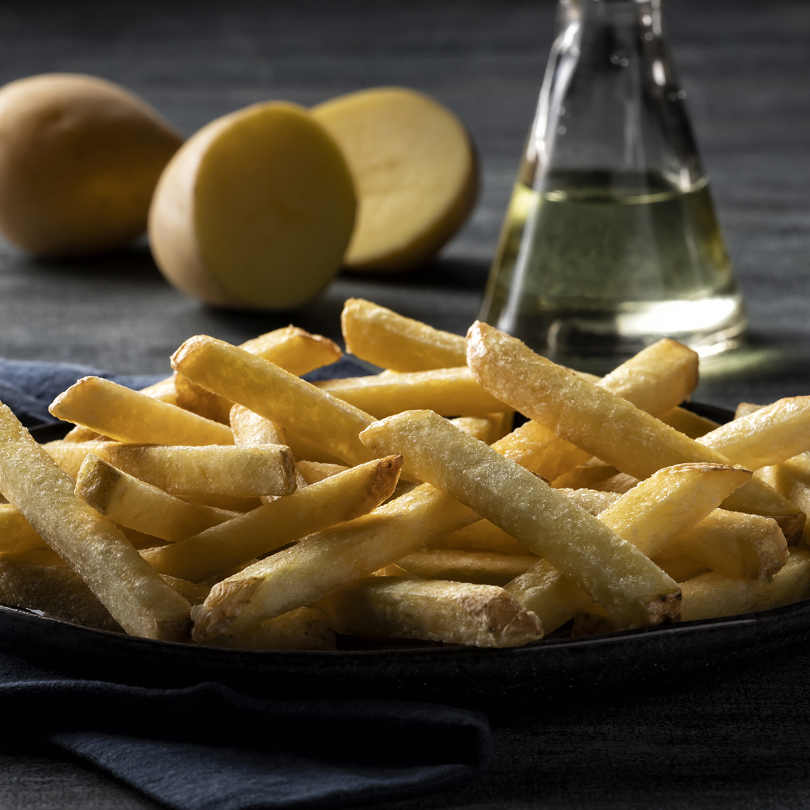
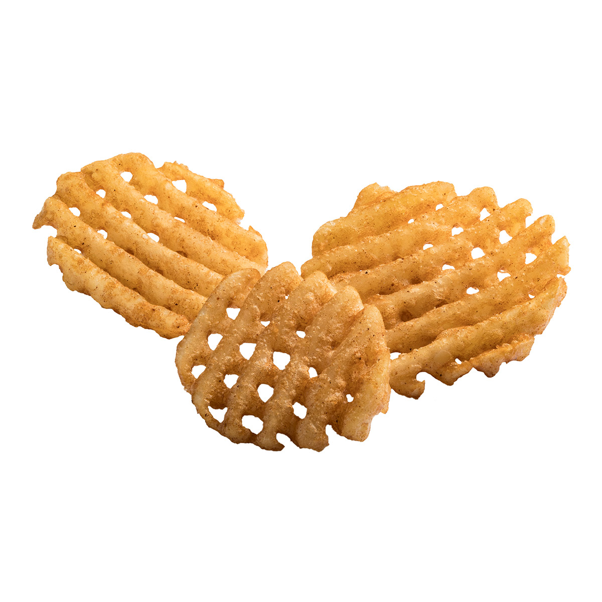
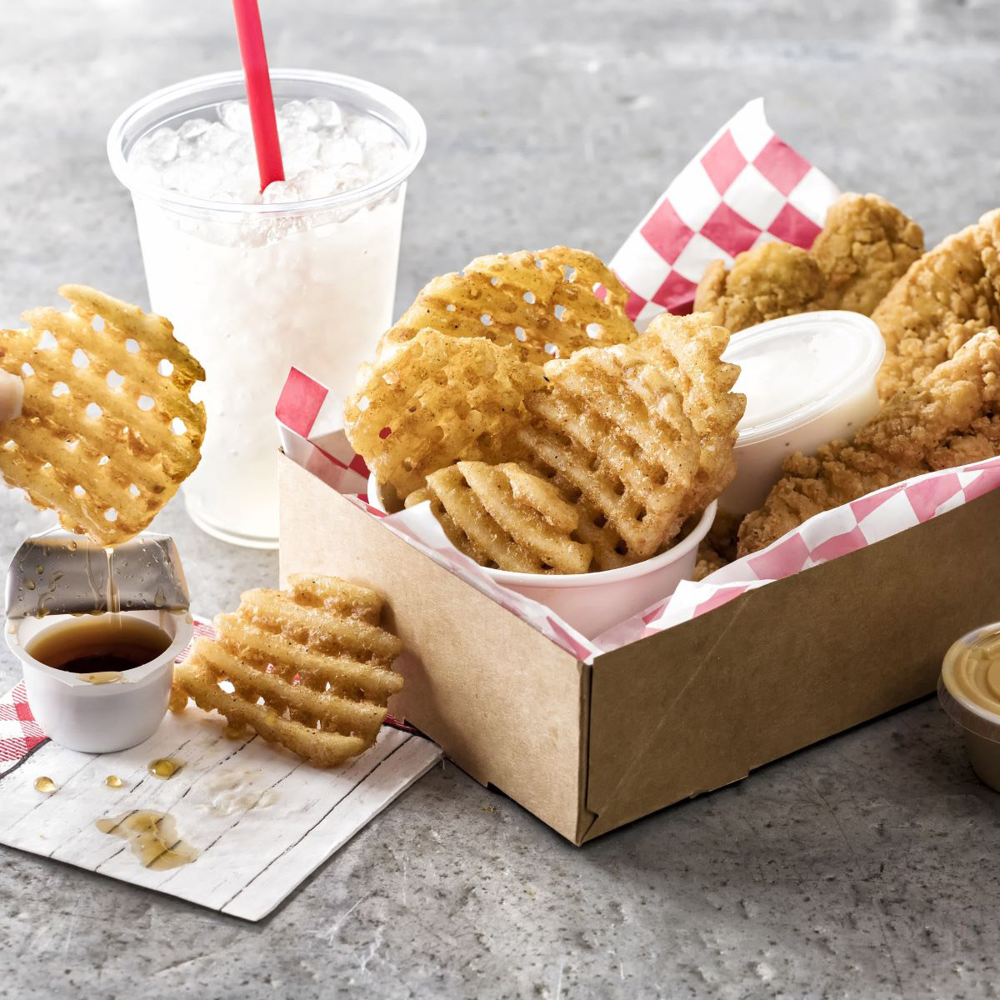

| Home | History | Company Overview | Product | Who We Are | Contact Us | Log in |
|
  Gold Straight Cut Fries, Skin OnMade with only potatoes and oil, FRYTO Simply Gold� fries are right on trend with consumer preferences for simpler ingredients. Cut from a yellow-fleshed potato to offer patrons a Euro-style fry experience with a crisp bite and creamy interior. This 5/16" cut offers the versatility of a 3/8" cut but cooks faster.   Waffle Flavored Waffle Fries, Skin OffNow serve chicken & waffles to customers on the go! New FRYTO Maple City� Waffle Fries are the first and only waffle fries that taste like waffles. Just add your fried chicken, tenders or nuggets to create a portable version of this hugely popular menu item. Made with real maple syrup! Also available in smaller Waffle Bites. |
||||||
| � 2024 Fryto Global Food || Privacy Policy Terms & Conditions |